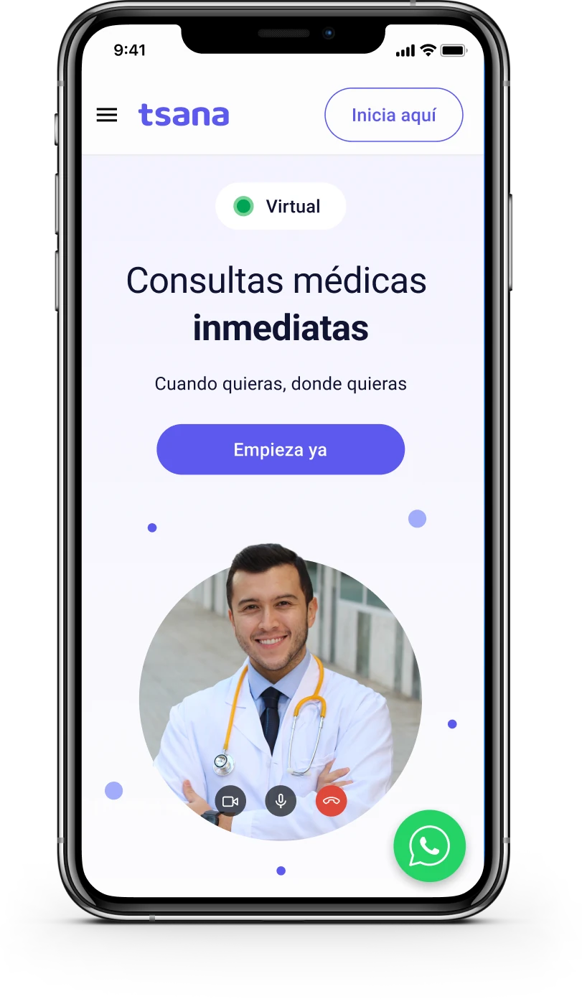
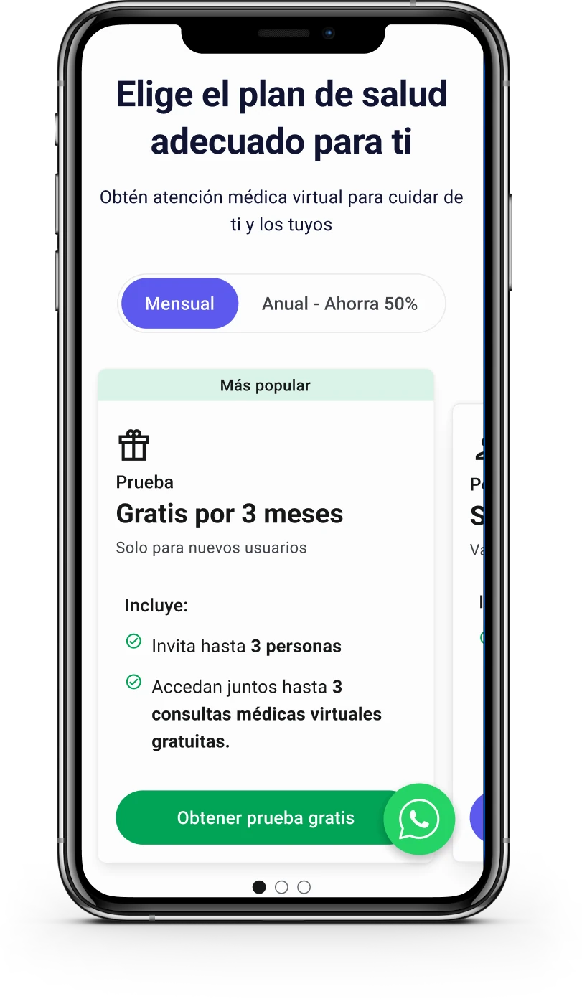
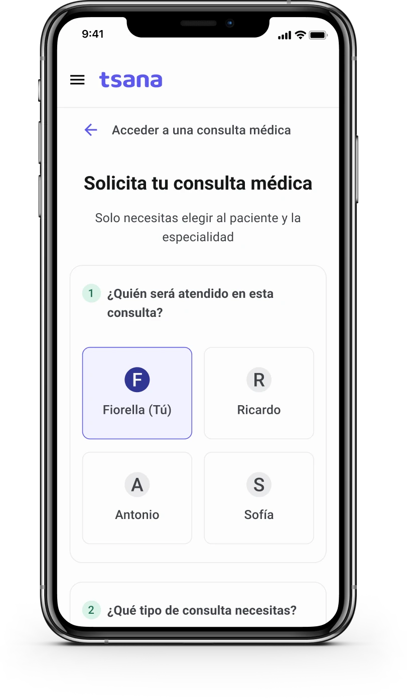
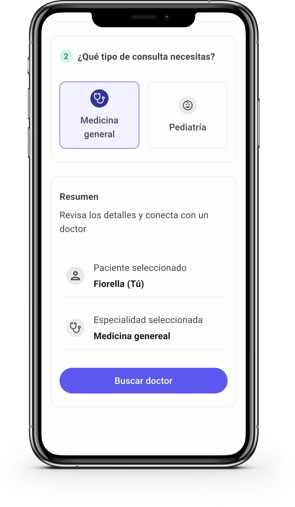
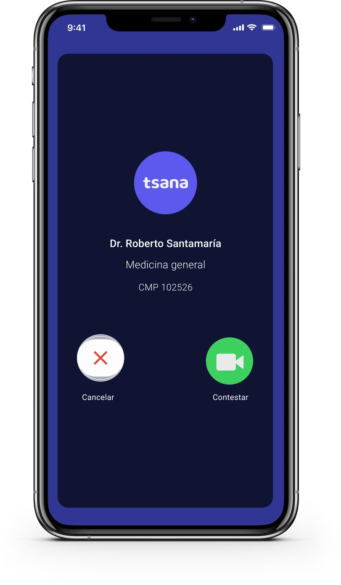
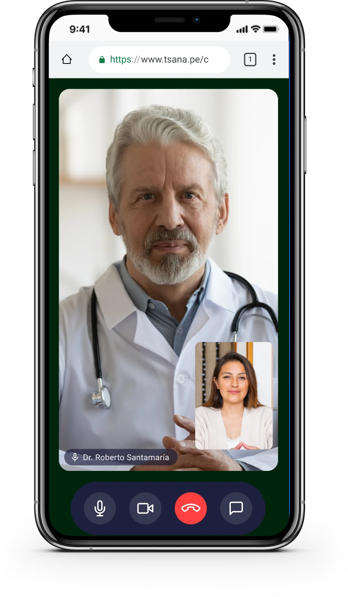
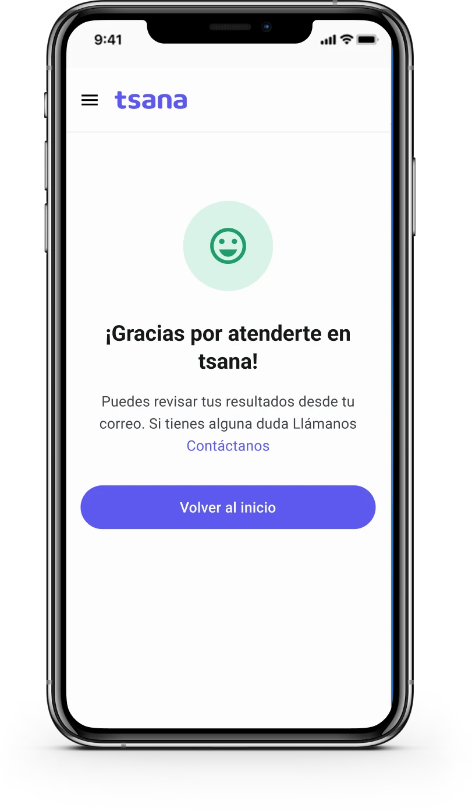
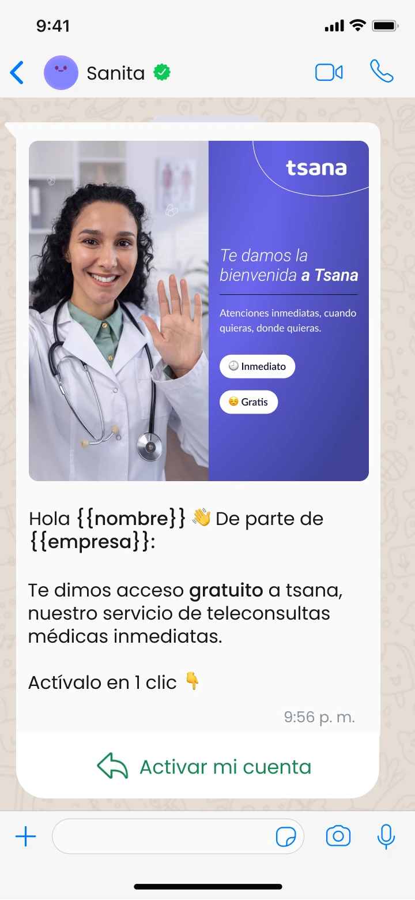
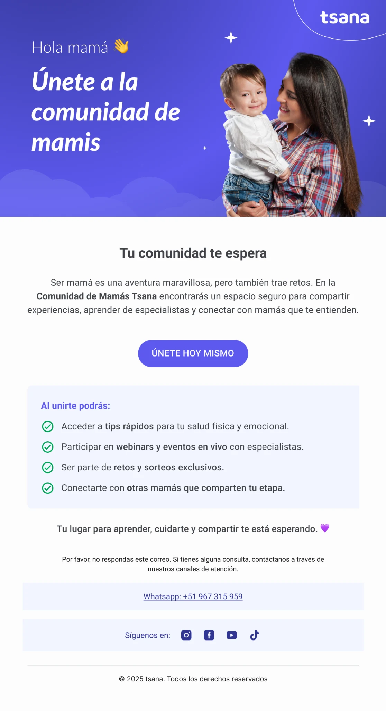
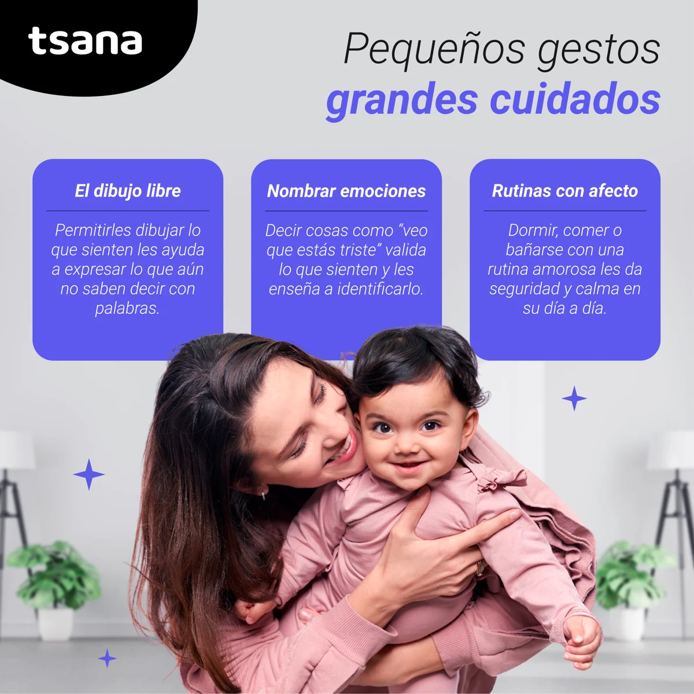

Hacer más simple el acceso a una consulta médica.
Rediseño y mejora continua de Tsana, la plataforma de teleconsultas médicas respaldada por Pacífico Salud.
Claridad para entender el servicio. Menos fricción para iniciar la atención.

Un servicio inmediato. Una experiencia por simplificar.
Tsana conecta a personas y familias peruanas con medicina general y pediatría por videollamada, sin agendar y todos los días. Tras la consulta, envía recetas, indicaciones y certificados por correo.
El desafío de producto
Explicar con claridad qué es Tsana, mejorar la activación y simplificar los recorridos de ingreso, atención y posconsulta.
Mi aporte como Product Designer
Conecté señales de investigación y feedback con decisiones de interfaz; diseñé pantallas de alta fidelidad, microinteracciones y estados, y acompañé la implementación con handoff y QA visual.
Escuchar antes de simplificar.
Las entrevistas y el análisis de feedback aportaron señales sobre confianza, fricciones de ingreso y preferencias. La participación en discovery ligero conectó estos insumos con el trabajo de interfaz.
“Me atendí rápido” / “Respaldo de clínica”. El valor está en recibir atención oportuna con respaldo.
“Me marean tantos datos”. Las dudas sobre qué es Tsana y los pasos previos dificultan el recorrido.
Planes mensuales e imágenes de médicos reales ayudan a transmitir confianza.
Convertir fricciones en decisiones concretas.
La respuesta de diseño se organizó alrededor de tres momentos: comprender el servicio, encontrar rápidamente la acción principal y reducir la carga antes de llegar al médico.
Hacer comprensible la propuesta
Hero claro con CTA directo, explicación en tres pasos y cards de valor con iconografía consistente.
Priorizar el inicio de atención
Consulta médica virtual como módulo principal del Home; “Mi plan” y “Mis perfiles” para gestionar el servicio y la familia.
Reducir la carga del ingreso
Interfaz compacta, validaciones en vivo, errores claros, CTA único y microcopy que explica por qué se solicita cada dato.
De entender el servicio a recibir atención.
Pantallas de alta fidelidad que materializan las decisiones del recorrido. El inicio concentra la acción principal; la consulta mantiene una secuencia clara hasta la posatención.






Propuesta, beneficios y planes.
Paciente, especialidad y resumen.
Llamada y videconsulta médica.
Resultados y orientación por correo.
Una experiencia coherente, dentro y fuera del producto.
El primer contacto también es parte de la experiencia. Se trabajó con Growth en copys consistentes para WhatsApp y email, aclarando qué es Tsana y reduciendo dudas sobre el origen del mensaje.
Activación con contexto y claridad
Los mensajes presentan el servicio de teleconsultas médicas inmediatas, explican el beneficio y llevan a activar la cuenta en un clic.
La identidad se extiende a los contenidos
La comunidad y las piezas de contenido mantienen una expresión visual consistente con la marca, acompañando la relación más allá de la consulta.




Diseño entregado. Impacto por validar.
El valor del caso está en conectar señales de usuarios con decisiones concretas de interfaz y acompañar su implementación.
Lo que aporté
Una experiencia más clara y una base consistente: pantallas hi-fi, microinteracciones, cobertura de estados y errores, evolución del Design System, handoff y QA visual.
Lo que falta medir
La mejora de activación es un objetivo, no una cifra. El material disponible no incluye métricas de impacto; no permite afirmar un incremento de conversión ni una reducción del abandono.
Validar la comprensión del servicio e instrumentar el embudo: visita → inicio de atención → solicitud completada. Observar el abandono por paso para priorizar la siguiente iteración.